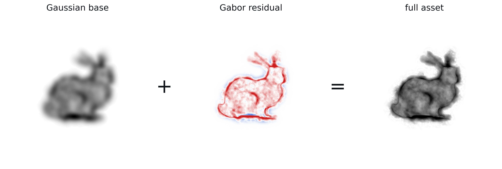

Gabor Fields: Orientation-Selective Level-of-Detail for Volume Rendering

Gaussian-based volumetric representations make physically based rendering practical at a fraction of the memory and runtime cost of dense voxel grids, but level-of-detail (LOD) remains inefficient: prefiltering or mipmap-style Gaussians costs extra memory, requires re-fitting per level, and can produce harsh transitions between LODs. We introduce Gabor Fields: mixtures of primitive anisotropic Gabor kernels (Gaussian envelopes with harmonic modulation). Since each kernel lives in a known frequency band, filtering becomes a matter of pruning primitives. Combined with analytic line integrals and a hierarchical fitting procedure, this yields continuous LOD, stochastic masking along rays for cheaper single- and multiple-scattering traversal, and easy integration within volumetric path tracing frameworks.
Each anisotropic Gabor primitive is a Gaussian envelope with a cosine planar wave. A plain Gaussian is a special case of the anisotropic Gabor where the modulation frequency ω is zero. In the Fourier domain the kernel is two symmetric lobes at ±ω, so unlike a Gaussian its spectrum is concentrated in a specific frequency band and a specific orientation rather than spilling across all frequencies.
A Gabor Field is a single continuous decomposition: a low-pass, high-density volume of Gaussians (zero-ω Gabors), plus a residual of Gabor kernels carrying the higher frequencies. Since we can analytically compute each kernel's power spectrum, filtering becomes simply removing the kernels that do not contribute meaningfully at the desired cutoff frequency.

Gabor Fields enable filtering volumes in a completely continuous manner: as the frequency cutoff shrinks, kernels are masked before tracing, making rendering faster, with no popping, no re-fitting, and no extra storage (no mipmaps, no pyramids).
Gabors are also directional. As a ray aligns with a kernel's wave direction, its positive and negative lobes cancel and the contribution collapses. We exploit this by splitting each frequency band into oriented, steerable sub-bands, so kernels that cannot contribute to a ray are masked before any intersection.
A Gabor Field stacks a low-frequency Gaussian base and a series of higher-frequency Gabor residuals that layer together into the full signal, and the base alone already carries most of the density. We can leverage this to accelerate rendering.
The low-pass base is an ideal control variate. We develop a series of stochastic-analytic estimators, where we always trace and analytically integrate the Gaussian base (~2% of the total primitives), and at each sample stochastically select which Gabor residuals to include. Crucially, every selected Gabor is still integrated in closed form: variance only comes from selecting which kernels we trace against. That choice is free: we can prioritise by frequency band, by contribution, or by perceptual importance (foveation-aware or blue-noise style), accelerating rendering with little variance (absorbing mediums) or bias (scattering mediums).
The objective in the end is reducing the main bottleneck of primitive volume rendering: the number of intersections per ray.
- Efficient motion blur, by removing the primitives that destructively interfere with themselves along the direction of travel.
- Foveated rendering, through eccentricity-aware level-of-detail, and by shifting the error into high frequencies, blue-noise style.
- Procedural cloud generation without any regression, just layered, natural-looking Gabor kernel noise.
Jorge Condor and Nicolai Hermann (joint first authors), Mehmet Ata Yurtsever, and Piotr Didyk. Gabor Fields: Orientation-Selective Level-of-Detail for Volume Rendering, ACM Transactions on Graphics (SIGGRAPH 2026).
@article{10.1145/3811369,
author = {Condor, Jorge and Hermann, Nicolai and Yurtsever, Mehmet Ata and Didyk, Piotr},
title = {Gabor Fields: Orientation-Selective Level-of-Detail for Volume Rendering},
year = {2026},
issue_date = {July 2026},
publisher = {Association for Computing Machinery},
address = {New York, NY, USA},
volume = {45},
number = {4},
issn = {0730-0301},
url = {https://doi.org/10.1145/3811369},
doi = {10.1145/3811369},
journal = {ACM Trans. Graph.},
month = jul,
articleno = {62},
numpages = {20}
}